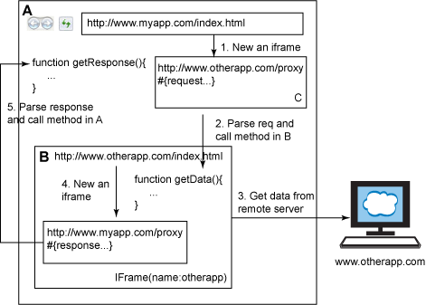
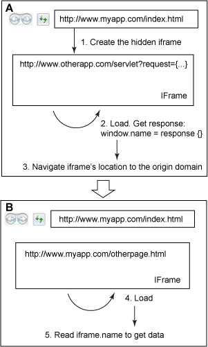
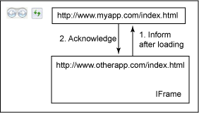

Loading scripts
<!doctype html>
<html>
<head>
<title>My App</title>
<!-- case 1 -->
<script type="text/javascript">
console.log('Code could be put here');
</script>
<!-- case 2 -->
<!--All scripts in head block the page until they are executed-->
<script src="external_script.js" type="text/javascript"></script>
<!-- Browser will not block rendering, when there is 'async'
attribute in 'script' tag, is not supported in IE < 10 and Opera-->
<script src="script.js" type="text/javascript" async></script>
<!-- 'defer' is the same as 'async', but it keeps the order: small2.js
will be executed after large2.js. Is not supported in Opera-->
<script src="large2.js" type="text/javascript" defer></script>
<script src="small2.js" type="text/javascript" defer></script>
<noscript>
This page requires a JavaScript-enabled browser.
</noscript>
</head>
<body>
...
<!-- Will be executed after rendering of the page -->
<script src="external_script.js" type="text/javascript"></script>
</body>
</html>
Lazy loading
RequireJS - is a JavaScript file and module loader.
require("extra.js", function () {
console.log('My script ia loaded');
});function require(file, callback) {
var script = document.getElementsByTagName('script')[0],
sr = document.createElement('script'),
callback = callback || function(){};
// IE
sr.onreadystatechange = function () {
if (sr.readyState === 'loaded' || sr.readyState === 'complete') {
sr.onreadystatechange = null;
callback();
}
};
// others
sr.onload = function () {
callback();
};
sr.src = file;
script.parentNode.insertBefore(sr, script);
}Browser's environment

Browser Object Model
Window


Navigator

Screen

Browser detection
Code of jQuery.browser, which is now moved to jquery-migrate plugin.
jQuery.uaMatch = function( ua ) {
ua = ua.toLowerCase();
var match = /(chrome)[ \/]([\w.]+)/.exec( ua ) ||
/(webkit)[ \/]([\w.]+)/.exec( ua ) ||
/(opera)(?:.*version|)[ \/]([\w.]+)/.exec( ua ) ||
/(msie) ([\w.]+)/.exec( ua ) ||
ua.indexOf("compatible") < 0 &&
/(mozilla)(?:.*? rv:([\w.]+)|)/.exec( ua ) || [];
return {
browser: match[ 1 ] || "",
version: match[ 2 ] || "0"
};
};Modernizr is a JavaScript library that detects HTML5 and CSS3 features in the user’s browser.
Location & History


HTML5 History API
Something should be placed here
Javascript animation
Cross Domain Requests
- XhrIframeProxy
- window.name
- window.postMessage
- JSONP
- CORS
The Same Origin Policy Restrictions
The same origin policy (SOP) prevents scripts loaded from one origin to get or manipulate properties or methods in the documents from another origin.Exceptions:
- JavaScript with <script src="..."></script>. Error messages for syntax errors are only available for same-origin scripts.
- CSS with <link rel="stylesheet" href="...">. Due to the relaxed syntax rules of CSS, cross-origin CSS requires a correct Content-Type header. Restrictions vary by browser.
- Images with <img>. Supported image formats include PNG, JPEG, GIF, BMP, SVG, ...
- Media files with <video> and <audio>.
- Plug-ins with <object>, <embed> and <applet>.
- Fonts with @font-face. Some browsers allow cross-origin fonts, others require same-origin fonts.
- Anything with <frame> and <iframe>.
XhrIframeProxy
function sendMsg(msg){
var frame = document.createElement(“iframe”);
var baseProxy = “http://www.otherapp.com/proxy.html”;
var request = {frameName:’otherApp’,data:msg};
frame.src = baseProxy+”#”+encodeURI (util.toJson(request));
frame.style.display=”none”;
document.body.appendChild(frame);
};
window.onLoad = function(){
var hash = window.location.hash;
if(hash && hash.length>1){
var request = hash.substring(1,hash.length);
var obj = util.fromJson(decodeURI (request));
var data = obj.data;
// getData in a function defined in B
parent.frames[obj.frameName].getData(…);
}
}window.name
window.postMessage
//Sending message from http://www.otherapp.com/index.html
function postMessage(msg){
var targetWindow = parent.window;
targetWindow.postMessage(msg,"*");
}
function handleReceive(msg){
var object = util.fromJson(msg);
if(object.status == “ok”){
//continue to do other things
……
}else{
//retry sending msg
……
}
}
window.addEventListener("message", handleReceive, false);
window.onLoad = function(){
postMessage("already loaded");
}//Receiving message at http://www.myapp.com/index.html
function handleReceive(event){
if(event.origin != "http://www.otherapp.com")
return;
//process data
……
var otherAppFrame = document.getElementById(“otherApp”);
otherAppFrame.postMessage(“{status:’ok’}”,”http://www.otherapp.com”);
}
window.addEventListener("message", handleReceive, false);
JSONP
<script type="text/javascript">
// This is our function to be called with JSON data
function showPrice(data) {
alert("Symbol: " + data.symbol + ", Price: " + data.price);
}
var url = “/action.php?attr='anything'&callback=showPrice”;
// this shows dynamic script insertion
var script = document.createElement('script');
script.setAttribute('src', url);
// load the script
document.getElementsByTagName('head')[0].appendChild(script);
</script>
//Response
showPrice({symbol: 'IBM', price: 91.42});
// alerts: Symbol: IBM, Price: 91.42
Ready JSONP examples: